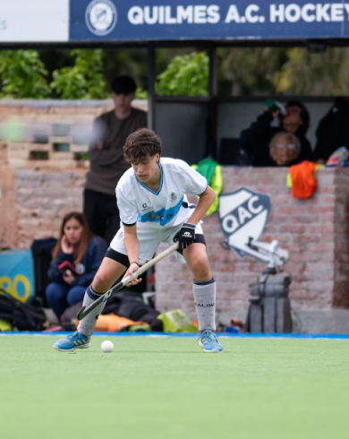
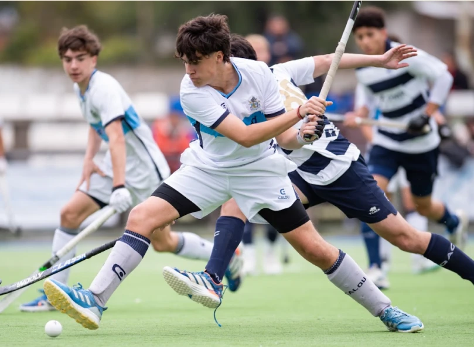

Hockey sobre césped · GEBA
Soy Santi, tengo 17. Juego al hockey desde los 8 y en GEBA desde 2017. Soy defensor central y le pego en los córners cortos. Lo mío es correr: no me canso nunca.

Perfil
Me gusta anticipar la jugada, ordenar la línea de fondo y salir limpio desde atrás. Hablo todo el partido. Y si hay que correr, corro: en el último minuto estoy igual que en el primero.
Trayectoria
Arranqué en infantiles con 8 años y no me fui más. Este año ya me convocaron a Intermedia.
Primeras convocatorias a Intermedia.
Titular en el Torneo Metropolitano (AHBA). En 2025 me convocaron al Seleccionado Juvenil de Buenos Aires para el Argentino Sub-16 y el cuerpo técnico me eligió mejor defensor de la temporada.
Capitán en 2023. Salimos campeones del Metropolitano.
Donde empezó todo.
Debutar en la Primera de GEBA y que me llamen de la selección juvenil.

Cómo pienso la defensa
“La defensa no es esperar al rival, es decidir dónde se juega el partido.”
Con estos juego desde chicos. Adentro de la cancha nos cubrimos entre todos. En verano también ayudo en las clínicas de los más chicos del club y voy a los encuentros solidarios: el hockey también es el grupo.
Hockey 101
Lo que hago en la cancha, explicado para mis amigos que no juegan.
Como un penal pero en grupo. Si te hacen falta adentro del área, sacás desde el fondo y tenés una chance muy clara de gol.
Me pasan la bocha al borde del área y le pego al arco. No la golpeás: la empujás con el palo y sale fuerte y alta.
Cuando el córner es en contra, el que pica sale primero a tapar el tiro. Hay que ser rápido y no tenerle miedo a la bocha.
Mi puesto. Ordeno la línea de fondo, anticipo la jugada y arranco la salida desde atrás.
Mi referente
Campeón olímpico con Los Leones en Río 2016. Para mí el mejor del mundo pegándole en los córners cortos. Lo miro en YouTube antes de los partidos para copiarle la técnica, y por cómo la mete cuando el partido está cerrado.